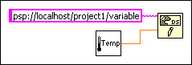
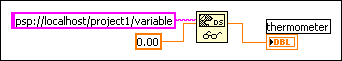

Open example�
Open example�
 Find related examples
Find related examples
From the block diagram, you can programmatically read or write data using the DataSocket functions or (Real-Time, Windows) using a Shared Variable node, which is useful for customizing or dynamically changing the data connection. You can use the DataSocket functions with shared variables to start and stop reading or writing shared variables programmatically, to specify a buffer size, or to dynamically determine which shared variable to read. You can wire a shared variable control into DataSocket functions to select the input shared variable.
Use the DataSocket Write function to write live data programmatically. The following block diagram shows how to write a numeric value.

The DataSocket Write function is polymorphic, so the data you write to the connection can be in any format or the LabVIEW data type.
Use the DataSocket Read function to read live data programmatically. The following block diagram shows how to read data and convert it to a double-precision floating-point number.

Convert live data to a specific data type by wiring a control or constant to the type input of the DataSocket Read function. If you do not specify a type, the data output of the DataSocket Read function returns variant data, which you can manipulate with the Variant To Data function.
Use the DataSocket Open and DataSocket Close functions to control when a data connection opens and closes. When you open a data connection using the DataSocket Open function, the connection remains open until one of the following conditions is met: you explicitly close the connection using the DataSocket Close function, you close the VI, or the VI stops running. If a VI stops running, the data connections of any subVI also will close. The URL input of the DataSocket Open function accepts only valid URLs. The DataSocket Open function returns a data connection refnum that you can use as the URL input for the DataSocket Read and DataSocket Write functions.
Refer to the VIs in the labview\examples\Data Communication\DataSocket\Simple DataSocket\Simple DataSocket.lvproj for examples of using DataSocket functions for data connections.
Open example�
Find related examples